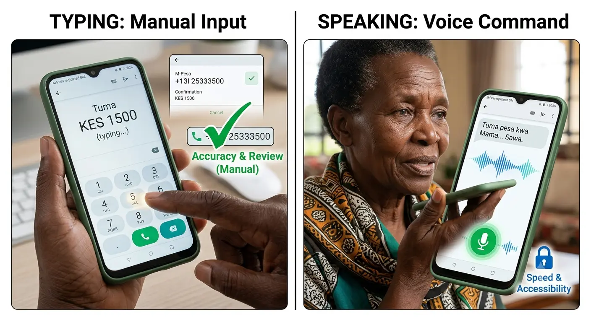

Why Use Voice-to-Text?
If typing on your phone feels difficult due to small keys, arthritis, vision problems, or simply because it takes too long, voice-to-text is the perfect solution. Instead of tapping each letter, you simply speak your message and your phone types it for you automatically.
This technology works on all modern smartphones in Kenya, Nigeria, Ghana, South Africa, and across Africa. Whether you use Android (Samsung, Tecno, Infinix, Nokia) or iPhone, you can start dictating messages today.
✅ Benefits of Voice-to-Text
- Faster: Most people speak 3-4 times faster than they type
- Easier on hands: No strain from tapping small screens
- Better for vision: No need to see tiny keyboard letters
- Works in multiple languages: English, Swahili, Yoruba, Hausa, Afrikaans, and more
- Free: Built into your phone at no extra cost
How Voice-to-Text Works
Voice-to-text (also called dictation or speech-to-text) uses artificial intelligence to listen to your voice and convert your spoken words into written text. When you tap the microphone icon on your keyboard, your phone starts listening. As you speak, the words appear on the screen automatically.
The microphone icon appears on your keyboard. Tap it, speak your message, and watch it appear as text.
Modern voice recognition is very accurate, even with African accents. It understands context, punctuation commands, and works even in slightly noisy environments.
Typing vs. Speaking: What's Better for You?

Speaking is natural and fast. Typing requires precision and can be tiring for seniors.
| Feature | Typing | Voice-to-Text |
|---|---|---|
| Speed | 20-30 words per minute | 100-150 words per minute |
| Hand strain | High (repetitive tapping) | None (just hold phone) |
| Vision required | Must see small keys | Minimal (just review text) |
| Learning curve | Must learn keyboard layout | Natural (just speak) |
| Accuracy | 100% if careful | 95-98% with clear speech |
| Best for | Short messages, passwords | Long messages, emails, notes |
Verdict: For most seniors, voice-to-text is the better choice for everyday messaging. Use typing only for short responses or when privacy is needed.
How to Use Voice-to-Text on Android Phones
Android phones (Samsung, Tecno, Infinix, Nokia, Xiaomi, etc.) have voice-to-text built into the keyboard. Here's how to use it:
Step-by-Step Instructions for Android
1Open any app where you can type (WhatsApp, SMS, Email, Notes)
2Tap where you want to write to bring up the keyboard
3Look for the microphone icon. It's usually:
- At the top-right corner of the keyboard, OR
- On the space bar (long-press the space bar), OR
- Next to the emoji button
4Tap the microphone icon once. You'll see it change color or show "Listening..."
5Speak clearly and naturally. Say your full message like you're talking to a person.
6Watch your words appear on the screen as you speak.
7Tap the microphone again or tap "Done" when finished.
8Review and edit if needed, then send your message.
💡 Android Tips
- GBoard (Google Keyboard): Most Android phones use GBoard. The microphone is always visible at the top.
- Samsung Keyboard: The microphone may be on the toolbar above the keyboard.
- No microphone? Go to Settings → System → Languages & Input → Virtual Keyboard → GBoard → Voice typing → Turn ON
- Offline mode: Download your language pack for voice typing without internet (Settings → Languages → Download)
How to Use Voice-to-Text on iPhone
iPhone calls this feature "Dictation." It works similarly to Android but with Apple's interface.
Step-by-Step Instructions for iPhone
1First, make sure Dictation is enabled:
- Go to Settings → General → Keyboard
- Turn ON "Enable Dictation"
- Choose your language (English, etc.)
2Open any app where you can type (Messages, WhatsApp, Mail, Notes)
3Tap the text field to bring up the keyboard
4Tap the microphone icon at the bottom-right of the keyboard (next to the space bar)
5Wait for the sound — you'll hear a beep and see the microphone icon pulse
6Speak your message clearly. Words will appear as you talk.
7Tap the microphone again or tap "Done" when finished.
8Review, edit if needed, and send.
💡 iPhone Tips
- Siri Dictation: Newer iPhones use Siri for dictation, which is very accurate.
- Internet required: iPhone dictation needs internet connection (unlike some Android offline modes).
- Multiple languages: You can add multiple dictation languages in Settings → General → Keyboard → Keyboards.
- Emoji by voice: Say "smiley face emoji" or "thumbs up emoji" to insert emojis!
Using Voice-to-Text in WhatsApp
WhatsApp is the most popular messaging app in Africa. Voice-to-text works perfectly in WhatsApp on both Android and iPhone.
Voice-to-Text in WhatsApp
- Open WhatsApp and select a chat
- Tap the text input field at the bottom
- Tap the microphone icon on your keyboard (NOT the WhatsApp voice note button)
- Speak your message
- Tap the microphone again when done
- Review the text and tap Send (paper airplane icon)
⚠️ Important: Don't Confuse These Two Microphones!
- Keyboard microphone = Voice-to-text (converts speech to written words)
- WhatsApp voice note button = Sends audio recording (your actual voice)
For voice-to-text, use the microphone on your keyboard, not the green microphone button in WhatsApp.
Using Voice-to-Text for SMS (Text Messages)
Sending regular text messages (SMS) also works with voice-to-text. The process is identical to WhatsApp:
- Open your Messages app (Android) or Messages app (iPhone)
- Start a new message or open an existing conversation
- Tap the text field
- Tap the microphone icon on the keyboard
- Speak your message
- Send when ready
SMS uses your mobile network (not internet), so you need airtime/data bundles. Voice-to-text itself is free, but sending the SMS may cost according to your carrier's rates.
Voice Commands for Punctuation and Formatting
You can speak punctuation and formatting commands to make your text look professional. Just say these words as you dictate:
| What to Say | What Appears | Example |
|---|---|---|
| "period" or "full stop" | . | "Hello period How are you" |
| "comma" | , | "Yes comma I agree" |
| "question mark" | ? | "How are you question mark" |
| "exclamation point" | ! | "Great to hear you exclamation point" |
| "new line" or "next line" | Line break | "Dear John new line I hope" |
| "new paragraph" | Paragraph break | "Thank you new paragraph Also" |
| "capital [word]" | CAPITAL WORD | "capital Nairobi" |
| "all caps [phrase]" | ALL CAPS PHRASE | "all caps urgent meeting" |
| "smiley face" or "happy face" | 😊 | "Great news smiley face" |
| "thumbs up" | 👍 | "Well done thumbs up" |
| "delete that" or "scratch that" | Removes last words | "Meet tomorrow delete that Meet Friday" |
💡 Pro Tip
You don't HAVE to use punctuation commands. Many people just speak naturally and add punctuation later by tapping the screen. Do what feels comfortable for you!
Supported Languages for African Users
Voice-to-text works with many African languages and accents. Here are the supported languages:
Android (GBoard)
- English (with South African, Nigerian, Kenyan accents recognized)
- Swahili (Tanzania, Kenya, Uganda)
- Afrikaans (South Africa)
- Amharic (Ethiopia)
- Hausa (Nigeria, Niger)
- Yoruba (Nigeria)
- Igbo (Nigeria)
- Zulu (South Africa)
- Xhosa (South Africa)
- French (for DRC, Cameroon, Ivory Coast, etc.)
- Portuguese (for Mozambique, Angola)
- Arabic (for North Africa)
iPhone (Siri Dictation)
- English (all variants including African accents)
- French
- Arabic
- Portuguese
- Swahili (limited support, improving)
💡 Language Tips
- Mixed languages: You can switch between languages mid-sentence (code-switching). Both Android and iPhone handle this well.
- Accent friendly: Modern AI understands African English accents very well. Speak naturally in your normal accent.
- Add languages: Go to keyboard settings to download additional language packs for offline use.
Privacy and Security Considerations
When you use voice-to-text, your voice is processed by Google (Android) or Apple (iPhone). Here's what you should know:
Is Voice-to-Text Private?
- Your voice data is sent to servers for processing (unless using offline mode)
- Companies say they don't store your recordings permanently
- Encryption is used to protect your data during transmission
- You can delete voice history in your account settings
When NOT to Use Voice-to-Text
- ❌ Entering passwords or PINs (like M-Pesa PIN)
- ❌ Sharing sensitive financial information (account numbers, amounts)
- ❌ Discussing private family matters in public places
- ❌ When others nearby can overhear you
⚠️ Privacy Best Practices
- Use offline mode when available (Android: download language pack)
- Don't dictate sensitive info like passwords, PINs, or bank details
- Be aware of surroundings — people nearby can hear you
- Review before sending — always check what was transcribed
- Delete voice history periodically in Google/Apple account settings
Troubleshooting Common Problems
"Microphone icon not showing"
- Go to Settings → System → Languages & Input → Virtual Keyboard
- Make sure GBoard or your keyboard app is selected
- In keyboard settings, turn ON "Voice typing"
"It's not understanding me"
- Speak more clearly and at a moderate pace
- Reduce background noise (move to quieter place)
- Check that the correct language is selected
- Try holding the phone closer to your mouth (6-8 inches away)
- Make sure your microphone isn't blocked (check phone case)
"Wrong words appearing"
- This is normal — review and tap wrong words to correct them
- Speak more clearly and enunciate
- Update your phone's software for better accuracy
- Train your voice: Use voice-to-text regularly to improve accuracy
"No internet connection"
- Android: Download offline language pack (Settings → Languages → Download)
- iPhone: Requires internet for dictation. Connect to Wi-Fi or enable mobile data
"Battery draining fast"
- Voice-to-text uses more battery than typing
- Use offline mode to reduce battery usage
- Close other apps while dictating long messages
Frequently Asked Questions (FAQs)
Q1: Is voice-to-text free or does it cost money?
Answer: Voice-to-text is completely FREE. It's built into your phone at no extra cost. However, if you're not on Wi-Fi, it may use a small amount of mobile data (except in offline mode). Sending the message (SMS or WhatsApp) may have its own costs based on your carrier or data plan.
Q2: Does voice-to-text work without internet?
Answer: On Android, YES — if you download the offline language pack. Go to Settings → Languages & Input → Voice typing → Offline speech recognition → Download your language. On iPhone, NO — dictation requires an internet connection to work.
Q3: Can I use voice-to-text in my local African language?
Answer: Yes! Android supports Swahili, Hausa, Yoruba, Igbo, Zulu, Xhosa, Afrikaans, Amharic, and more. iPhone supports fewer African languages but handles accented English very well. Check your keyboard settings to add your preferred language.
Q4: Why does it type wrong words sometimes?
Answer: Voice recognition isn't perfect (about 95-98% accurate). Background noise, unclear speech, or uncommon words can cause errors. Always review your message before sending. Tap any wrong word to see suggestions or type the correction manually. Accuracy improves with regular use.
Q5: Can I use voice-to-text for WhatsApp voice notes?
Answer: No — these are different features. Voice-to-text converts your speech to WRITTEN words. WhatsApp voice notes send your actual VOICE recording. To send a voice note, use the green microphone button IN WhatsApp. To dictate text, use the microphone on your KEYBOARD.
Q6: Is voice-to-text secure for banking or M-Pesa messages?
Answer: We recommend NOT using voice-to-text for sensitive information like passwords, PINs, account numbers, or transaction amounts. Type these manually instead. Voice data is processed on company servers, and people nearby might overhear. For general messages about banking ("I'm going to the bank"), it's fine.
Q7: My phone is old/slow. Will voice-to-text still work?
Answer: Voice-to-text works on most smartphones from 2018 onwards. If your phone is very old (before 2017), it might not have this feature or may be slow. Consider updating your phone's software first. If it still doesn't work, you might need a newer phone. Even budget phones like Tecno Spark, Infinix Hot, and Samsung A series have voice-to-text.
Start Speaking Today!
Voice-to-text is a game-changer for seniors who find typing difficult or time-consuming. Within minutes of trying it, you'll wonder why you didn't start sooner.
Your Action Plan:
- Open WhatsApp or Messages right now
- Find the microphone icon on your keyboard
- Tap it and say "Hello, this is my first voice message"
- Watch the magic happen as your words appear!
- Practice daily — it gets better and faster each time
Remember: Technology is meant to serve YOU. If speaking is easier than typing, use it without hesitation. Millions of seniors across Africa are already enjoying the freedom of voice-to-text. You can too!
📞 Need Help?
If you're still having trouble setting up voice-to-text, ask a family member, visit a local Senior Tech Help workshop, or contact our support team. We're here to help you stay connected with confidence.